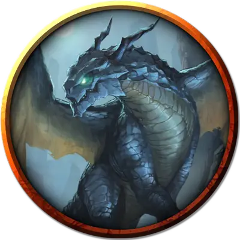

Сталагма Стальная тень
Stalagma Steelshadow
Огромный Дракон, законно-злой, именной НИП

Класс Доспеха 19 (природный доспех)
Хиты 243 (18к12 + 126)
Скорость 40 футов, летая 80 футов
| мод | спас | ||
|---|---|---|---|
| СИЛ | 27 | +8 | +8 |
| ЛОВ | 10 | +0 | +5 |
| ТЕЛ | 25 | +7 | +12 |
| мод | спас | ||
|---|---|---|---|
| ИНТ | 16 | +3 | +3 |
| МДР | 13 | +1 | +6 |
| ХАР | 21 | +5 | +10 |
Навыки Восприятие +11, История +8, Магия +8, Скрытность +5
Иммунитет к урону холод
Чувства слепое зрение 60 футов, тёмное зрение 120 футов, пассивное Восприятие 21
Языки Дварфийский, Драконий, Терран
Опасность 16 (15000 опыта)
Бонус мастерства +5
Особенности
Легендарное сопротивление (3/день). Если Сталагма проваливает спасбросок, она может вместо этого сделать спасбросок успешным.
Дуэргарская устойчивость (только в облике дуэргара). Сталагма совершает с преимуществом спасброски от яда, заклинаний и иллюзий, а также спасброски для сопротивления очарованию и параличу.
Чувствительность к солнечному свету (только в облике дуэргара). Находясь на солнечном свету, Сталагма совершает с помехой броски атаки, а также проверки Мудрости (Восприятие), полагающиеся на зрение.
Действия
Мультиатака. Сталагма может использовать Ужасающее присутствие. Затем она совершает три атаки: одну укусом, и две когтями. В облике дуэрагара она может действием совершить три атаки глефой.
Глефа (только в облике дуэргара). Рукопашная атака оружием: +13 к попаданию, досягаемость 10 футов, одна цель. Попадание: 13 (1к10 + 8) или 19 (2к10 + 8), пока увеличена.
Укус. Рукопашная атака оружием: +13 к попаданию, досягаемость 10 футов, одна цель. Попадание: Колющий урон 19 (2к10 + 8).
Коготь. Рукопашная атака оружием: +13 к попаданию, досягаемость 5 футов, одна цель. Попадание: Рубящий урон 15 (2к6 + 8).
Хвост. Рукопашная атака оружием: +13 к попаданию, досягаемость 15 футов, одна цель. Попадание: Дробящий урон 17 (2к8 + 8).
Ужасающее присутствие. Все существа на выбор Сталагмы, находящиеся в пределах 120 футов от него и знающие о её присутствии, должны преуспеть в спасброске Мудрости Сл 18, иначе станут испуганными на 1 минуту. Существо может повторять этот спасбросок в конце каждого своего хода, оканчивая эффект на себе при успехе. Если спасбросок существа был успешным, или эффект на нём окончился, оно получает иммунитет к Ужасающему присутствию этого дракона на следующие 24 часа.
Оружия дыхания (перезарядка 5–6). Сталагма использует один из следующих видов оружия дыхания.
• Струя кислоты. Сталагма выдыхает струю кислоты 60-футовой линией, шириной в 5 футов. Все существа в этой области должны совершить спасбросок Телосложения Сл 20, получая урон кислотой 58 (13к8) при провале, или половину этого урона при успехе.
• Парализующее дыхание. Сталагма выдыхает парализующий газ 60-футовым конусом. Все существа в этой области должны преуспеть в спасброске Телосложения Сл 20, иначе станут парализованными на 1 минуту. Существо может повторять этот спасбросок в конце каждого своего хода, оканчивая эффект на себе при успехе.
Смена формы. Сталагма магическим образом превращается в гуманоида или зверя, чей показатель опасности не превышает его собственный, или принимает свой истинный облик. Он принимает свой истинный облик, если умирает. Всё снаряжение, которое он несёт или носит, сливается с новым обликом или используется им (на выбор дракона). В новом облике дракон сохраняет мировоззрение, хиты, Кости Хитов, способность говорить, владения, Легендарные действия, действия логова, значения Интеллекта, Мудрости и Харизмы, а также действия. Все остальные характеристики и умения заменяются характеристиками и умениями нового облика, за исключением классовых умений и легендарных действий нового облика.
Увеличение (только в облике дуэргара, перезаряжается после короткого или продолжительного отдыха). На 1 минуту дуэргар магическим образом увеличивается в размере вместе со всем, что несёт и носит. Пока дуэргар увеличен, он является Большого размера, удваивает кости урона от атак оружием, основанных на Силе (уже учтено в атаке) и совершает с преимуществом проверки и спасброски Силы. Если дуэргару не хватает места, чтобы стать Большим, он приобретает максимальный размер, допустимый имеющимся пространством.
Невидимость (только в облике дуэргара, перезаряжается после короткого или продолжительного отдыха). Дуэргар магическим образом становится невидимым в течение 1 часа или пока он не атакует, наложит заклинание, использует своё «Увеличение» или потеряет концентрацию (как если бы он концентрировался на заклинании). Любое снаряжение, одетое или носимое дуэргаром, становится невидимым вместе с ним.
Легендарные действия
Сталагма может совершить 3 легендарных действия, выбирая из представленных ниже вариантов. За один раз можно использовать только одно легендарное действие, и только в конце хода другого существа. Дракон восстанавливает использованные легендарные действия в начале своего хода.
Обнаружение. Сталагма совершает проверку Мудрости (Восприятие).
Атака хвостом. Сталагма совершает атаку хвостом.
Атака крыльями (стоит 2 действия). Сталагма бьёт своими крыльями. Все существа в пределах 10 футов от дракона должны преуспеть в спасброске Ловкости Сл 21, иначе получат дробящий урон 15 (2к6 + 8) и будут сбиты с ног. После этого дракон может пролететь на расстояние, не превышающее половину скорости полёта.
Описание
Сталагма - ненаглядная супруга Валтагара Стальной Тени, и только Валтагар знает, что его жена на самом деле сменивший облик дракон. В своем истинном облике Сталагма выглядит как грациозный, 30-футовой в длину дракон с блестящей серо-стальной чешуей, стальными когтями и похожими на лезвия рогами на узкой голове.
Сталагма так же мрачна, пессимистична и коварна, как и все дуэргары. Она сама вырастила горгону, которая не позволяет никому ездить на ней кроме своей хозяйки. Зверь достаточно умен, чтобы подчиняться устным командам Сталагмы, и достаточно силен, чтобы выдержать ее вес, когда она находится под Увеличением дуэргара.
Сталагма атакует любого не дуэргара, если он не находится под защитой ее мужа. Когда требуется дополнительное подкрепление, Сталагма громогласно восклицает на языке Дварфов: "К оружию!" и её гулкий голос заставляет дуэргаров в зонах 18b и 18c бросить свои занятия и отправится к ней с оружием в руках. Боевой клич также будит спящих в зоне 19b стражников, которые хватают свое оружие и отправляются узнать что произошло. Если ее верховое животное-горгона будет убита или она получит слишком много урона в облике дуэргара, следующим действием Сталагма возвращается в свой истинный облик. Другие дуэргары, узревшие Сталагму в ее истинном обличье, спасаются бегством, если только Валтагар не уверит их, что дракон это союзник.
Скармливая сокровища из разбитой вагонетки ксорнам, Сталагма установила над ними свой контроль. Помимо языков Дварфов и Драконов, она говорит на языке Терран и ксорны понимают её приказы.